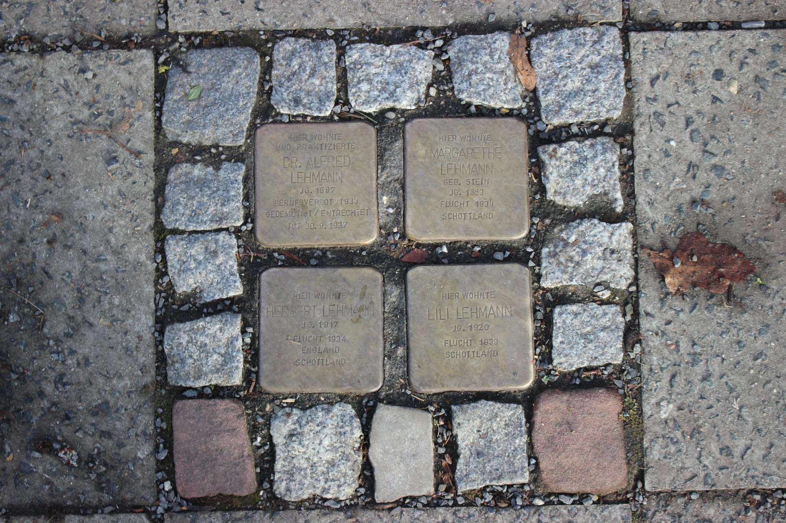
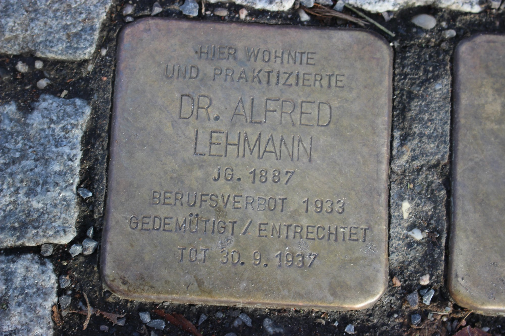
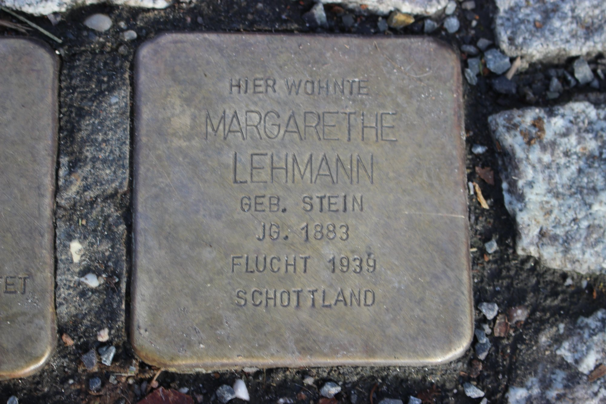
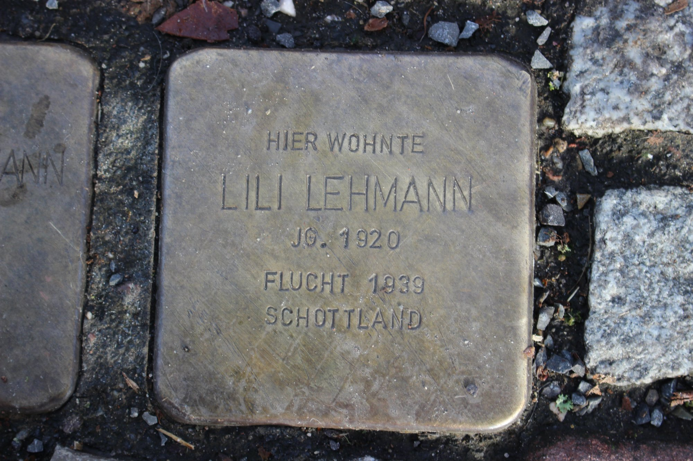
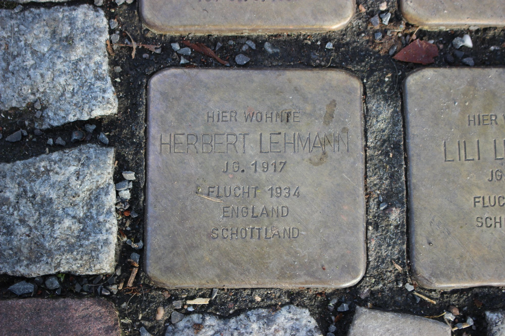
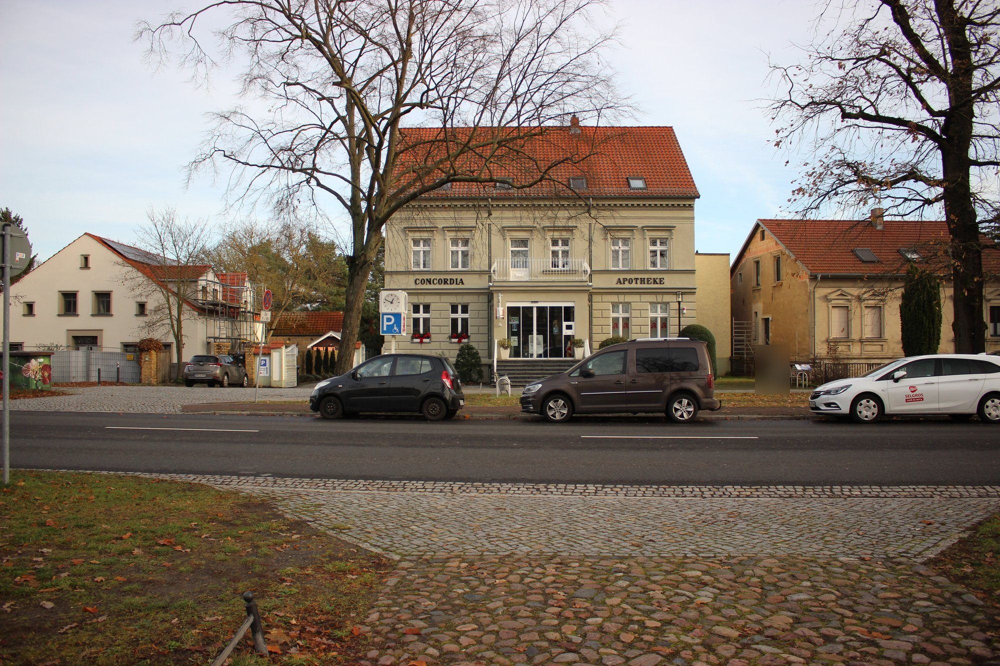

Stolpersteine für die Familie Lehmann
An der Breiten Straße liegen vier Stolpersteine für die Familie Lehmann. Dr. Alfred Lehmann war Allgemeinarzt in Velten und im Ersten Weltkrieg Frontarzt. Nach 1933 wurde er als jüdischer Arzt boykottiert. Antisemitischer und politischer Druck zwangen ihn, sein Veltener Wohnhaus zu verkaufen; die Familie zog nach Berlin. Dr. Alfred Lehmann starb am 30. September 1937 in Berlin und wurde auf dem Jüdischen Friedhof Berlin-Weißensee beigesetzt.
Seine Frau Margarethe, geborene Stein, floh im August 1939 mit der Tochter Lili nach Schottland und starb 1945 in Glasgow. Sohn Herbert lebte seit 1934 in England und diente später in der britischen Armee. Lili Lehmann wanderte 1949 nach Kanada aus. Die Stolpersteine wurden am 30. März 2015 verlegt.
Das Geburtsjahr von Dr. Alfred Lehmann ist nicht einheitlich überliefert: Der Stein und Wikipedia nennen 1887, die Broschüre der Initiativgruppe nennt den 4.12.1883, die Stadt Velten 1878. Die Stadt Velten stellt auf ihrer Seite die Stolpersteine vor.






Lage: Anhaltspunkt an der Breiten Straße nach der Adresse laut Wikipedia, nicht eingemessen, Abweichung einige zehn Meter. · 52.68850, 13.18300
Quellen: Eigene Fotos der Stolpersteine (Jens-Martin Krieg, 16.12.2023); Broschüre «Familie Lehmann» der Initiativgruppe gegen Gewalt und Rassismus Velten; Wikipedia, «Liste der Stolpersteine in Velten»; Stadt Velten, Seite Stolpersteine.
Auf der Karte zeigen · Zur Übersicht · Quellen und Rechte